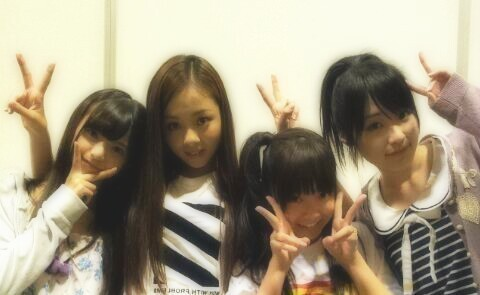

| 2012/09 23 Sun | 名古屋 全国握手会★ ろってぃー |
ほっほーーい★
こんにちわ。
ろってぃーです(⌒‐⌒)
昨日は 名古屋にて
全国握手会☆
私たち6レーンメンバーで
終わった後,
写メ撮りました*^^*

来てくださった皆様,
ほんとぉ〜にっ
ありがとうございましたっ*・∀・*
やっぱ まひろ握手会
大好きやわっ♪
かずみん推しの方や
あすか推しの方や
ひめたん推しの方や
初めましての方や
たあ〜っくさんの方と
お喋りできるし
『へぇ〜い^ω^
こんな人もいるんだぁ〜』
とか
例えば
『この方は 本当にバスケを
愛してるんやなあ*・∀・*』
とか ファンの方々の
趣味やとかだったりも
聞けて
たくさん色々なことを
知れて 話せて
本当に楽しかった(・∀・)!!
昨日 握手したばかりなのに
もう 皆様に会いたいさっ♪笑
ちなみに今は
大阪個別握手会にて
控え室☆
ベッドがあったので
美雲と二人で寝ていました(ω)
服 シンシワに
なっちゃちった >∀<笑
とゆーことで
シャツしわってるかもだけど
気にしないでねん=・ω・=♪
わら
ほなっ、今日も
よろしくだってばよw
★☆★
あのね、
美雲可愛いよ。笑♪
名古屋に来る前
会社にメンバー集合
してから出発したんだけど
会社に携帯おいてきちゃった
みたいですm(__)m笑
だから blog更新したいんですけど
もうちょっと待ってください(>_<)
って^ω^
よろしくお願いします*^^*
スタッフの皆様も
本当にありがとうございましたっ!
以上っ))
ろってぃーでした のし

いぇい。
コメント(211)
2012/09/23 11:06